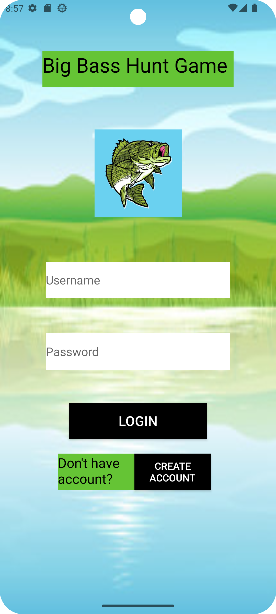
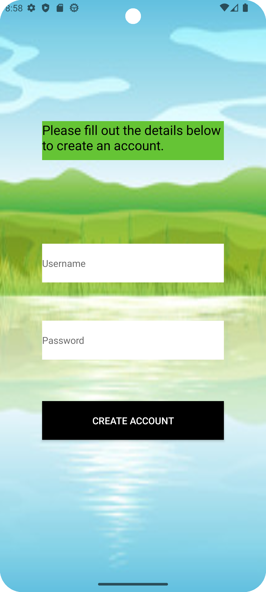
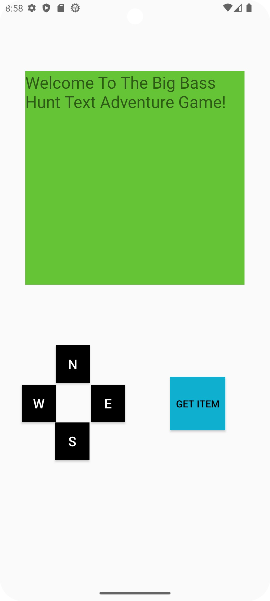
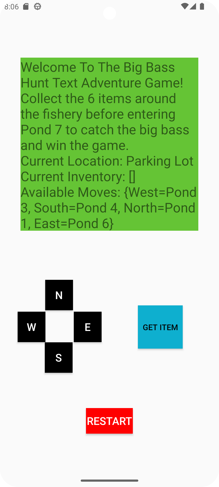
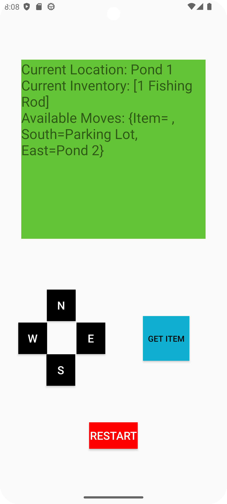
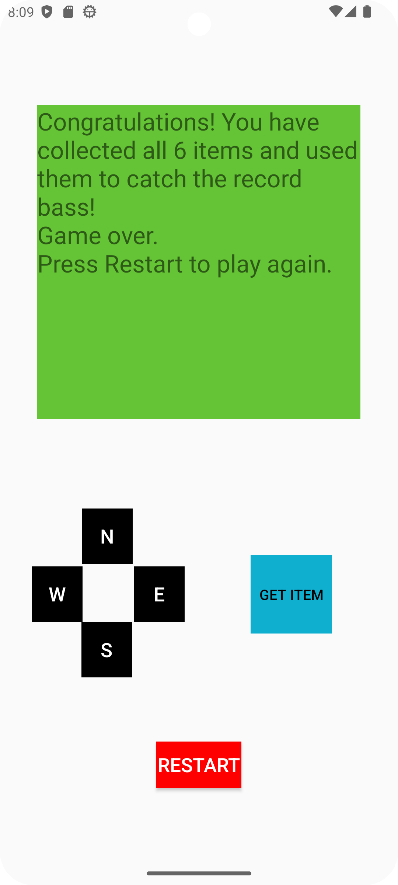

Enhanced Text-Based Fishing Game
I have completed this enhanced text-based fishing game as the project for my Computer Science Capstone course. The goal of this project was to enhance an original artifact in three categories: Software design and engineering, algorithms and data structures, and databases. The original text-based game could only run in a terminal window. I have enhanced the original text-based game by turning it into a fully functional mobile application. You can learn more about the project and the enhancements that I have made below.
Milestone One: Code Review
For Milestone One I reviewed the source code of the original text-based game that could only run in a terminal window. I also discussed what enhancements I planned to make to the original text-based game.
Milestone Two: Enhancement One: Software Design and Engineering
For Milestone Two I programmed the static view of the mobile game application. This static view is an enhancement of the previous text-based game design that could only run in a terminal window. I also completed a narrative for this milestone which is linked above along with the source code for this milestone.
Login Screen
Create Account Screen
Gameplay Screen
Milestone Three: Enhancement Two: Algorithms and Data Structures
For Milestone Three I programmed the gameplay functionality for the mobile game application. The gameplay algorithm was enhanced to fit the new retro-style virtual device with buttons as input. I also completed a narrative for this milestone which is linked above along with the source code for this milestone.
New Startup Screen With Restart Button Added
Gameplay Functionality Added
Game Won
Milestone Four: Enhancement Three: Databases
For Milestone Four I programmed the login functionality for the application. To program the login functionality for the application, I also had to create a database. These are enhancements to the original text-based game which did not include login functionality or a database. I also completed a narrative for this milestone which is linked above along with the source code for this milestone.